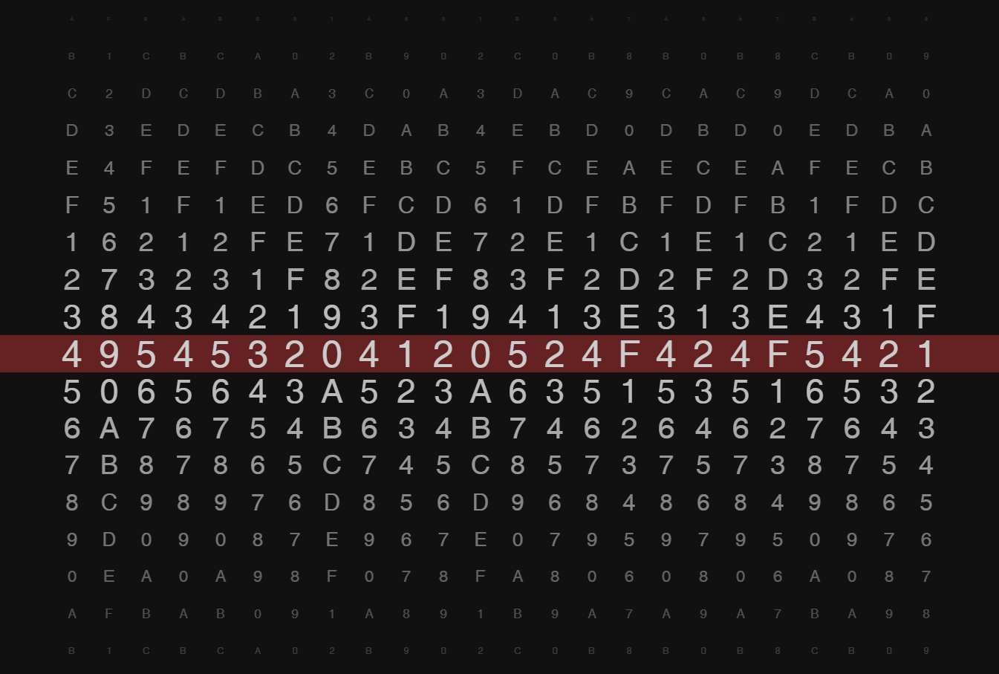
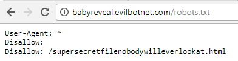
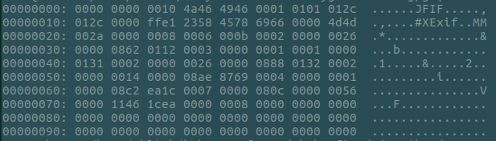
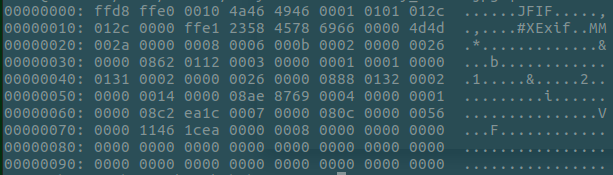

At first glance, it looks like an alpha-numeric cipher lock. However, most of the letters are missing.. When the wheel stops, the resulting cipher (highlighted in red) looks like it might be encoded in hexadecimal notation.
After converting the hex encoded string 495453204120524f424f5421 to ASCII, the result is ITS A ROBOT!
Websites often host files they do not wish to be indexed by major search engine pr oviders. To accomodate, the robots exclusion standard, or robots.txt, is used to omit sensitive pages or data from web crawlers and other web robots.
The standard requires a simple text file to be located at http://{site root}.com/robots.txt. The robots.txt file on this site reveals a hidden file /supersecretfilenobodywilleverlookat.html .
The Hidd3n P4g3 contains a link to a broken file. It can be assumed that because of the file's extension, it is supposed to be a JPEG image. However, it doesn't seem to open in any image viewing applications. Upon closer inspection, it appears to be missing the first 8-bytes of the JPEG header. These header bytes tell the operating system and applications how to properly handle the data within a particular file. In the case of this file they are 00 00 00 00 but the JPEG header should start with FF D8 FF E0.
 Using a hex editor like hexedit on linux, the file can be modified to fix the broken header and the image file can be opened normally.
The last step is to decrypt the flag that is imposed on the image from Step 3. When dealing with special characters in scripting or web applications, websites can encode filenames or user-input using base64 or web encoding. By encoding the text, it eliminates the need to worry about special characters which may break other parts of an application. In this case, the base64 encoded flag aVQncyA0IEcxckwh can be decoded into iT's 4 G1rL!
{kind=link}